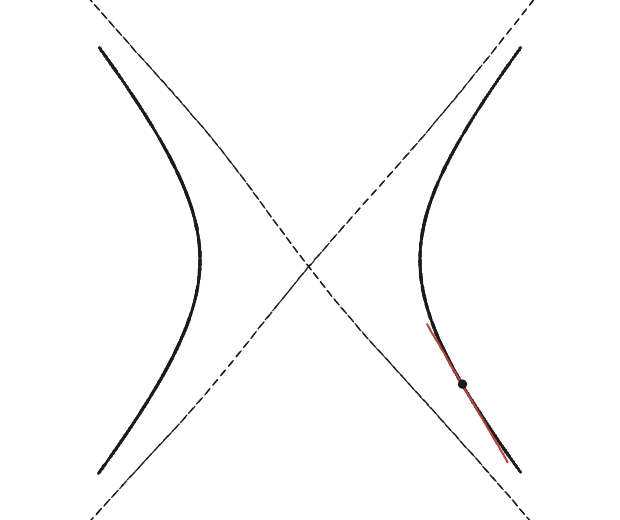
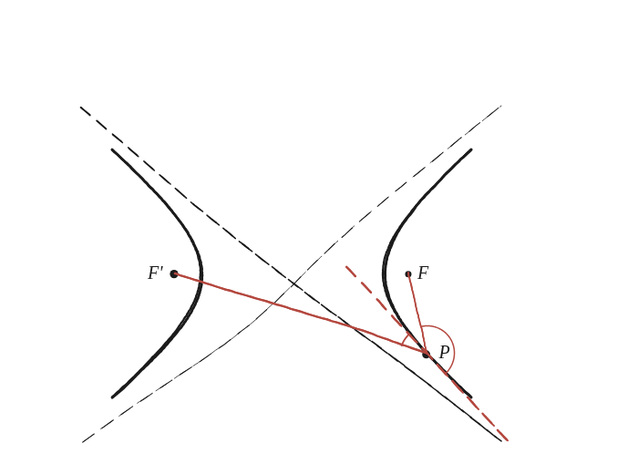

Pots descobrir la propietat de la tangent d'una hipèrbola?

Què hem de produir
Una frase sobre l'angle que fa la tangent en un punt qualsevol de la hipèrbola amb els dos radis focals d'aquell punt —l'anàloga, per a la hipèrbola, de la propietat reflectora de l'el·lipse.
No serà exactament la mateixa
A l'el·lipse, els dos radis focals van cap al mateix costat de la tangent —per això un raig des d'un focus rebota cap a l'altre. A la hipèrbola, els dos focus són a banda i banda de la corba: un braç s'acosta a un focus mentre l'altre se n'allunya. Dibuixant un punt i els seus dos radis focals, on cau la tangent respecte d'ells?
La construcció

Tancar-ho
Els dos angles que la tangent forma amb els dos radis focals són iguals: la tangent és la bisectriu de l'angle que formen entre ells els dos radis focals —la bisectriu interior, no la de l'angle exterior com passava a l'el·lipse.
La tangent a la hipèrbola en un punt P bisecta l'angle interior format pels dos radis focals PF i PF' —a diferència de l'el·lipse, on la tangent bisecta l'angle exterior.
Comprovació
Amb a=4, b=3, c=5, al punt P=(5, 9/4) de la hipèrbola (25/16 − (81/16)/9 = 1, confirmat que hi és). La tangent en P té pendent 9x/(16y) = 1,25. Mesurant l'angle que fa la tangent amb PF₁ (cap a (5,0)) i amb PF₂ (cap a (−5,0)): tots dos surten ≈141,3°, iguals entre si —o ≈38,7° tots dos, si es pren la tangent en l'altre sentit. El que cal comprovar és que coincideixen entre ells, no quin dels dos números surt: el sentit que es triï per a la tangent canvia els dos angles alhora, i els deixa iguals igualment.
Aquesta bisectriu interior —en lloc de l'exterior— és exactament el que fa que un mirall amb forma d'hipèrbola, orientat cap a un focus, dispersi els raigs en lloc de concentrar-los: el principi que fan servir els telescopis Cassegrain per combinar un mirall el·líptic i un d'hiperbòlic.